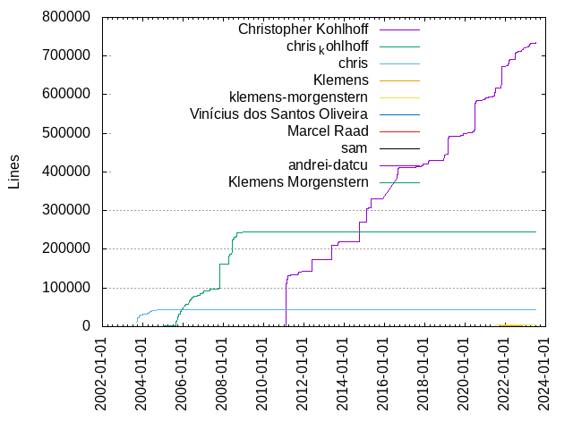

Authors
| Author | Commits (%) | + lines | - lines | First commit | Last commit | Age | Active days | # by commits |
|---|
| Christopher Kohlhoff | 1929 (57.22%) | 734125 | 374741 | 2011-02-07 | 2023-07-05 | 4530 days, 11:25:55 | 616 | 1 |
| chris_kohlhoff | 1055 (31.30%) | 244299 | 107182 | 2004-11-18 | 2009-02-01 | 1535 days, 13:05:29 | 419 | 2 |
| chris | 286 (8.48%) | 43050 | 19973 | 2003-09-12 | 2004-10-13 | 396 days, 15:38:44 | 93 | 3 |
| Klemens | 5 (0.15%) | 4544 | 2744 | 2021-08-02 | 2022-08-28 | 390 days, 11:43:55 | 4 | 4 |
| klemens-morgenstern | 3 (0.09%) | 3832 | 22 | 2021-06-20 | 2021-07-02 | 12 days, 12:31:52 | 3 | 5 |
| Vinícius dos Santos Oliveira | 3 (0.09%) | 326 | 2 | 2022-02-02 | 2023-03-07 | 398 days, 4:42:20 | 3 | 6 |
| Marcel Raad | 3 (0.09%) | 89 | 22 | 2016-04-01 | 2022-02-08 | 2139 days, 3:04:13 | 3 | 7 |
| sam | 2 (0.06%) | 5 | 5 | 2022-11-22 | 2022-11-22 | 0:03:44 | 1 | 8 |
| andrei-datcu | 2 (0.06%) | 3 | 2 | 2021-12-01 | 2021-12-01 | 0:04:09 | 1 | 9 |
| Klemens Morgenstern | 2 (0.06%) | 13 | 5 | 2022-10-03 | 2022-12-07 | 64 days, 5:12:33 | 2 | 10 |
| Jean-Michaël Celerier | 2 (0.06%) | 8 | 1 | 2017-07-29 | 2021-09-30 | 1524 days, 7:59:07 | 2 | 11 |
| JackBurton79 | 2 (0.06%) | 6 | 1 | 2018-11-28 | 2018-11-28 | 0:09:10 | 1 | 12 |
| Gudmundur Adalsteinsson | 2 (0.06%) | 3 | 2 | 2022-02-23 | 2023-01-26 | 337 days, 0:31:09 | 2 | 13 |
| Gregor Jasny | 2 (0.06%) | 6 | 0 | 2021-08-20 | 2023-04-18 | 606 days, 4:56:27 | 2 | 14 |
| Cristian Morales Vega | 2 (0.06%) | 4 | 4 | 2019-02-12 | 2021-07-28 | 896 days, 20:57:17 | 2 | 15 |
| tusikalanse | 1 (0.03%) | 1 | 1 | 2021-09-12 | 2021-09-12 | 0:00:00 | 1 | 16 |
| staphen | 1 (0.03%) | 1 | 1 | 2021-06-06 | 2021-06-06 | 0:00:00 | 1 | 17 |
| root | 1 (0.03%) | 0 | 0 | 2004-10-27 | 2004-10-27 | 0:00:00 | 1 | 18 |
| regular384 | 1 (0.03%) | 1 | 1 | 2018-03-14 | 2018-03-14 | 0:00:00 | 1 | 19 |
| qicosmos | 1 (0.03%) | 6 | 1 | 2023-05-24 | 2023-05-24 | 0:00:00 | 1 | 20 |
These didn't make it to the top: pianofab, kiwixz, jyxjrh, jmcruz-uma, huangqinjin, cynecx, ala, abbyssoul, Zyrin, Zsolt Parragi, Zoltán Mizsei, Yury Yaroshevich, Vasileios Anagnostopoulos, Torkel Bjørnson-Langen, Thomas Köckerbauer, Tanzinul Islam, Simon Arlott, SaltfishAmi, Ryan Pavlik, Petr Hosek, Peter Jankuliak, Pawel Pery, Pavel A. Lebedev, Pavao Jerebić, Nick Gasson, Nicholas Fish, Mike Pollard, MiguelCompany, Miguel Company, Matvey Larionov, Mathias Berchtold, Mario Emmenlauer, Marek Kurdej, Maarten de Vries, Luke Elliott, Lucian Petrut, Lev Stipakov, Konstantin Podsvirov, Kira M. Backes, Kai Liu, Justin Kerk, Juraj Ivančić, Josh Pieper, Jason Volk, Jake Cooke, Jaak Ristioja, J.W. Jagersma, Iwa13, Ivan Shynkarenka, Ion Rosca, Hovhannes Tonakanyan, Guillaume Egles, Faris Elghlan, EvinceMoi, Edward Catmur, David Wedderwille, Connor Broyles, Caleb Epstein, Boris Sergeev, Bence SZIGETI, Ben Hetherington, Bas Zalmstra, Arun M, Anton Ryzhov, Andrey Semashev, Andre Schröder
Only top 20 authors shown
Only top 20 authors shown
| Month | Author | Commits (%) | Next top 5 | Number of authors |
|---|
| 2023-07 | Christopher Kohlhoff | 13 (100.00% of 13) | | 1 |
| 2023-06 | Connor Broyles | 1 (100.00% of 1) | | 1 |
| 2023-05 | qicosmos | 1 (33.33% of 3) | Vasileios Anagnostopoulos, Anton Ryzhov | 3 |
| 2023-04 | Christopher Kohlhoff | 23 (95.83% of 24) | Gregor Jasny | 2 |
| 2023-03 | Christopher Kohlhoff | 33 (91.67% of 36) | Vinícius dos Santos Oliveira, Mathias Berchtold, Andrey Semashev | 4 |
| 2023-02 | Christopher Kohlhoff | 11 (78.57% of 14) | Vinícius dos Santos Oliveira, Kai Liu, Juraj Ivančić | 4 |
| 2023-01 | huangqinjin | 1 (33.33% of 3) | Jason Volk, Gudmundur Adalsteinsson | 3 |
| 2022-12 | Christopher Kohlhoff | 16 (94.12% of 17) | Klemens Morgenstern | 2 |
| 2022-11 | Christopher Kohlhoff | 7 (70.00% of 10) | sam, Hovhannes Tonakanyan | 3 |
| 2022-10 | Christopher Kohlhoff | 13 (92.86% of 14) | Klemens Morgenstern | 2 |
| 2022-09 | Lev Stipakov | 1 (100.00% of 1) | | 1 |
| 2022-08 | Christopher Kohlhoff | 18 (90.00% of 20) | Klemens | 2 |
| 2022-07 | Christopher Kohlhoff | 32 (100.00% of 32) | | 1 |
| 2022-06 | Christopher Kohlhoff | 37 (100.00% of 37) | | 1 |
| 2022-05 | Jake Cooke | 1 (50.00% of 2) | Christopher Kohlhoff | 2 |
| 2022-04 | Christopher Kohlhoff | 9 (81.82% of 11) | Miguel Company, Klemens | 3 |
| 2022-03 | Christopher Kohlhoff | 47 (95.92% of 49) | Pavao Jerebić, J.W. Jagersma | 3 |
| 2022-02 | Christopher Kohlhoff | 35 (89.74% of 39) | kiwixz, Vinícius dos Santos Oliveira, Marcel Raad, Gudmundur Adalsteinsson | 5 |
| 2022-01 | Marek Kurdej | 1 (50.00% of 2) | Ivan Shynkarenka | 2 |
| 2021-12 | Christopher Kohlhoff | 3 (42.86% of 7) | andrei-datcu, Jaak Ristioja, EvinceMoi | 4 |
| 2021-11 | Christopher Kohlhoff | 27 (96.43% of 28) | Tanzinul Islam | 2 |
| 2021-10 | Christopher Kohlhoff | 16 (88.89% of 18) | SaltfishAmi, Klemens | 3 |
| 2021-09 | Christopher Kohlhoff | 9 (69.23% of 13) | tusikalanse, Thomas Köckerbauer, Jean-Michaël Celerier, Ben Hetherington | 5 |
| 2021-08 | Christopher Kohlhoff | 12 (75.00% of 16) | Klemens, Gregor Jasny, Edward Catmur, David Wedderwille | 5 |
| 2021-07 | Christopher Kohlhoff | 56 (93.33% of 60) | klemens-morgenstern, Faris Elghlan, Cristian Morales Vega | 4 |
| 2021-06 | Christopher Kohlhoff | 33 (94.29% of 35) | staphen, klemens-morgenstern | 3 |
| 2021-05 | Christopher Kohlhoff | 40 (97.56% of 41) | Maarten de Vries | 2 |
| 2021-04 | Christopher Kohlhoff | 4 (100.00% of 4) | | 1 |
| 2021-03 | Christopher Kohlhoff | 12 (100.00% of 12) | | 1 |
| 2021-02 | Christopher Kohlhoff | 3 (100.00% of 3) | | 1 |
| 2021-01 | Christopher Kohlhoff | 27 (96.43% of 28) | Pavel A. Lebedev | 2 |
| 2020-12 | Christopher Kohlhoff | 7 (100.00% of 7) | | 1 |
| 2020-11 | Christopher Kohlhoff | 20 (95.24% of 21) | Simon Arlott | 2 |
| 2020-10 | Christopher Kohlhoff | 11 (78.57% of 14) | Lucian Petrut, Josh Pieper, Andre Schröder | 4 |
| 2020-09 | Nick Gasson | 1 (50.00% of 2) | Kira M. Backes | 2 |
| 2020-08 | Christopher Kohlhoff | 7 (87.50% of 8) | pianofab | 2 |
| 2020-07 | Christopher Kohlhoff | 76 (100.00% of 76) | | 1 |
| 2020-06 | Christopher Kohlhoff | 85 (100.00% of 85) | | 1 |
| 2020-05 | Christopher Kohlhoff | 40 (100.00% of 40) | | 1 |
| 2020-04 | Christopher Kohlhoff | 33 (100.00% of 33) | | 1 |
| 2020-03 | Christopher Kohlhoff | 10 (90.91% of 11) | jyxjrh | 2 |
| 2019-12 | Christopher Kohlhoff | 11 (100.00% of 11) | | 1 |
| 2019-11 | Christopher Kohlhoff | 5 (83.33% of 6) | Pawel Pery | 2 |
| 2019-10 | Christopher Kohlhoff | 5 (83.33% of 6) | Matvey Larionov | 2 |
| 2019-09 | Christopher Kohlhoff | 4 (100.00% of 4) | | 1 |
| 2019-08 | Christopher Kohlhoff | 3 (100.00% of 3) | | 1 |
| 2019-07 | Christopher Kohlhoff | 10 (90.91% of 11) | jmcruz-uma | 2 |
| 2019-06 | Zoltán Mizsei | 1 (100.00% of 1) | | 1 |
| 2019-05 | Torkel Bjørnson-Langen | 1 (100.00% of 1) | | 1 |
| 2019-04 | Mike Pollard | 1 (50.00% of 2) | Christopher Kohlhoff | 2 |
| 2019-03 | Christopher Kohlhoff | 33 (100.00% of 33) | | 1 |
| 2019-02 | Christopher Kohlhoff | 28 (93.33% of 30) | abbyssoul, Cristian Morales Vega | 3 |
| 2019-01 | Zyrin | 1 (100.00% of 1) | | 1 |
| 2018-12 | Christopher Kohlhoff | 16 (94.12% of 17) | MiguelCompany | 2 |
| 2018-11 | Christopher Kohlhoff | 25 (89.29% of 28) | JackBurton79, Zsolt Parragi | 3 |
| 2018-10 | Christopher Kohlhoff | 1 (100.00% of 1) | | 1 |
| 2018-07 | Mario Emmenlauer | 1 (100.00% of 1) | | 1 |
| 2018-06 | Caleb Epstein | 1 (100.00% of 1) | | 1 |
| 2018-05 | Luke Elliott | 1 (100.00% of 1) | | 1 |
| 2018-04 | Christopher Kohlhoff | 6 (85.71% of 7) | Petr Hosek | 2 |
| 2018-03 | Christopher Kohlhoff | 45 (95.74% of 47) | regular384, Boris Sergeev | 3 |
| 2018-02 | Yury Yaroshevich | 1 (33.33% of 3) | Peter Jankuliak, Christopher Kohlhoff | 3 |
| 2017-12 | Christopher Kohlhoff | 29 (100.00% of 29) | | 1 |
| 2017-11 | Christopher Kohlhoff | 22 (95.65% of 23) | Konstantin Podsvirov | 2 |
| 2017-10 | Christopher Kohlhoff | 7 (77.78% of 9) | Justin Kerk, Ion Rosca | 3 |
| 2017-08 | Christopher Kohlhoff | 2 (66.67% of 3) | Guillaume Egles | 2 |
| 2017-07 | Christopher Kohlhoff | 29 (93.55% of 31) | Jean-Michaël Celerier, Bence SZIGETI | 3 |
| 2017-06 | Christopher Kohlhoff | 3 (75.00% of 4) | Arun M | 2 |
| 2017-04 | Iwa13 | 1 (100.00% of 1) | | 1 |
| 2017-03 | Christopher Kohlhoff | 9 (100.00% of 9) | | 1 |
| 2017-02 | Christopher Kohlhoff | 3 (100.00% of 3) | | 1 |
| 2017-01 | Christopher Kohlhoff | 8 (100.00% of 8) | | 1 |
| 2016-12 | Bas Zalmstra | 1 (100.00% of 1) | | 1 |
| 2016-10 | ala | 1 (33.33% of 3) | Nicholas Fish, Marcel Raad | 3 |
| 2016-09 | Christopher Kohlhoff | 33 (100.00% of 33) | | 1 |
| 2016-08 | Christopher Kohlhoff | 46 (100.00% of 46) | | 1 |
| 2016-05 | cynecx | 1 (100.00% of 1) | | 1 |
| 2016-04 | Marcel Raad | 1 (100.00% of 1) | | 1 |
| 2016-03 | Ryan Pavlik | 1 (100.00% of 1) | | 1 |
| 2016-01 | Christopher Kohlhoff | 1 (100.00% of 1) | | 1 |
| 2015-12 | Christopher Kohlhoff | 6 (100.00% of 6) | | 1 |
| 2015-11 | Christopher Kohlhoff | 5 (100.00% of 5) | | 1 |
| 2015-10 | Christopher Kohlhoff | 2 (100.00% of 2) | | 1 |
| 2015-09 | Christopher Kohlhoff | 2 (100.00% of 2) | | 1 |
| 2015-07 | Christopher Kohlhoff | 1 (100.00% of 1) | | 1 |
| 2015-06 | Christopher Kohlhoff | 5 (100.00% of 5) | | 1 |
| 2015-05 | Christopher Kohlhoff | 21 (100.00% of 21) | | 1 |
| 2015-04 | Christopher Kohlhoff | 5 (100.00% of 5) | | 1 |
| 2015-03 | Christopher Kohlhoff | 27 (100.00% of 27) | | 1 |
| 2015-02 | Christopher Kohlhoff | 31 (100.00% of 31) | | 1 |
| 2014-12 | Christopher Kohlhoff | 3 (100.00% of 3) | | 1 |
| 2014-11 | Christopher Kohlhoff | 9 (100.00% of 9) | | 1 |
| 2014-10 | Christopher Kohlhoff | 46 (100.00% of 46) | | 1 |
| 2014-09 | Christopher Kohlhoff | 3 (100.00% of 3) | | 1 |
| 2014-07 | Christopher Kohlhoff | 6 (100.00% of 6) | | 1 |
| 2014-06 | Christopher Kohlhoff | 9 (100.00% of 9) | | 1 |
| 2014-05 | Christopher Kohlhoff | 31 (100.00% of 31) | | 1 |
| 2014-04 | Christopher Kohlhoff | 13 (100.00% of 13) | | 1 |
| 2014-02 | Christopher Kohlhoff | 1 (100.00% of 1) | | 1 |
| 2013-11 | Christopher Kohlhoff | 4 (100.00% of 4) | | 1 |
| 2013-10 | Christopher Kohlhoff | 6 (100.00% of 6) | | 1 |
| 2013-09 | Christopher Kohlhoff | 26 (100.00% of 26) | | 1 |
| 2013-08 | Christopher Kohlhoff | 21 (100.00% of 21) | | 1 |
| 2013-07 | Christopher Kohlhoff | 1 (100.00% of 1) | | 1 |
| 2013-06 | Christopher Kohlhoff | 4 (100.00% of 4) | | 1 |
| 2013-05 | Christopher Kohlhoff | 29 (100.00% of 29) | | 1 |
| 2013-04 | Christopher Kohlhoff | 2 (100.00% of 2) | | 1 |
| 2013-03 | Christopher Kohlhoff | 3 (100.00% of 3) | | 1 |
| 2013-02 | Christopher Kohlhoff | 1 (100.00% of 1) | | 1 |
| 2012-12 | Christopher Kohlhoff | 12 (100.00% of 12) | | 1 |
| 2012-08 | Christopher Kohlhoff | 3 (100.00% of 3) | | 1 |
| 2012-07 | Christopher Kohlhoff | 16 (100.00% of 16) | | 1 |
| 2012-05 | Christopher Kohlhoff | 19 (100.00% of 19) | | 1 |
| 2012-02 | Christopher Kohlhoff | 3 (100.00% of 3) | | 1 |
| 2012-01 | Christopher Kohlhoff | 15 (100.00% of 15) | | 1 |
| 2011-12 | Christopher Kohlhoff | 1 (100.00% of 1) | | 1 |
| 2011-10 | Christopher Kohlhoff | 14 (100.00% of 14) | | 1 |
| 2011-09 | Christopher Kohlhoff | 34 (100.00% of 34) | | 1 |
| 2011-07 | Christopher Kohlhoff | 1 (100.00% of 1) | | 1 |
| 2011-06 | Christopher Kohlhoff | 18 (100.00% of 18) | | 1 |
| 2011-05 | Christopher Kohlhoff | 27 (100.00% of 27) | | 1 |
| 2011-04 | Christopher Kohlhoff | 29 (100.00% of 29) | | 1 |
| 2011-03 | Christopher Kohlhoff | 90 (100.00% of 90) | | 1 |
| 2011-02 | Christopher Kohlhoff | 112 (100.00% of 112) | | 1 |
| 2009-02 | chris_kohlhoff | 3 (100.00% of 3) | | 1 |
| 2008-10 | chris_kohlhoff | 16 (100.00% of 16) | | 1 |
| 2008-09 | chris_kohlhoff | 19 (100.00% of 19) | | 1 |
| 2008-08 | chris_kohlhoff | 30 (100.00% of 30) | | 1 |
| 2008-07 | chris_kohlhoff | 41 (100.00% of 41) | | 1 |
| 2008-06 | chris_kohlhoff | 32 (100.00% of 32) | | 1 |
| 2008-05 | chris_kohlhoff | 16 (100.00% of 16) | | 1 |
| 2008-04 | chris_kohlhoff | 51 (100.00% of 51) | | 1 |
| 2008-03 | chris_kohlhoff | 11 (100.00% of 11) | | 1 |
| 2008-02 | chris_kohlhoff | 7 (100.00% of 7) | | 1 |
| 2008-01 | chris_kohlhoff | 13 (100.00% of 13) | | 1 |
| 2007-12 | chris_kohlhoff | 16 (100.00% of 16) | | 1 |
| 2007-11 | chris_kohlhoff | 25 (100.00% of 25) | | 1 |
| 2007-10 | chris_kohlhoff | 39 (100.00% of 39) | | 1 |
| 2007-09 | chris_kohlhoff | 22 (100.00% of 22) | | 1 |
| 2007-08 | chris_kohlhoff | 24 (100.00% of 24) | | 1 |
| 2007-07 | chris_kohlhoff | 6 (100.00% of 6) | | 1 |
| 2007-06 | chris_kohlhoff | 4 (100.00% of 4) | | 1 |
| 2007-05 | chris_kohlhoff | 33 (100.00% of 33) | | 1 |
| 2007-04 | chris_kohlhoff | 7 (100.00% of 7) | | 1 |
| 2007-03 | chris_kohlhoff | 6 (100.00% of 6) | | 1 |
| 2007-02 | chris_kohlhoff | 13 (100.00% of 13) | | 1 |
| 2007-01 | chris_kohlhoff | 42 (100.00% of 42) | | 1 |
| 2006-12 | chris_kohlhoff | 13 (100.00% of 13) | | 1 |
| 2006-11 | chris_kohlhoff | 25 (100.00% of 25) | | 1 |
| 2006-10 | chris_kohlhoff | 25 (100.00% of 25) | | 1 |
| 2006-09 | chris_kohlhoff | 18 (100.00% of 18) | | 1 |
| 2006-08 | chris_kohlhoff | 9 (100.00% of 9) | | 1 |
| 2006-07 | chris_kohlhoff | 25 (100.00% of 25) | | 1 |
| 2006-06 | chris_kohlhoff | 46 (100.00% of 46) | | 1 |
| 2006-05 | chris_kohlhoff | 38 (100.00% of 38) | | 1 |
| 2006-04 | chris_kohlhoff | 52 (100.00% of 52) | | 1 |
| 2006-03 | chris_kohlhoff | 5 (100.00% of 5) | | 1 |
| 2006-02 | chris_kohlhoff | 14 (100.00% of 14) | | 1 |
| 2006-01 | chris_kohlhoff | 17 (100.00% of 17) | | 1 |
| 2005-12 | chris_kohlhoff | 54 (100.00% of 54) | | 1 |
| 2005-11 | chris_kohlhoff | 64 (100.00% of 64) | | 1 |
| 2005-10 | chris_kohlhoff | 33 (100.00% of 33) | | 1 |
| 2005-09 | chris_kohlhoff | 64 (100.00% of 64) | | 1 |
| 2005-08 | chris_kohlhoff | 48 (100.00% of 48) | | 1 |
| 2005-07 | chris_kohlhoff | 1 (100.00% of 1) | | 1 |
| 2005-04 | chris_kohlhoff | 6 (100.00% of 6) | | 1 |
| 2005-03 | chris_kohlhoff | 11 (100.00% of 11) | | 1 |
| 2004-11 | chris_kohlhoff | 11 (100.00% of 11) | | 1 |
| 2004-10 | chris | 2 (66.67% of 3) | root | 2 |
| 2004-09 | chris | 13 (100.00% of 13) | | 1 |
| 2004-08 | chris | 5 (100.00% of 5) | | 1 |
| 2004-07 | chris | 7 (100.00% of 7) | | 1 |
| 2004-06 | chris | 10 (100.00% of 10) | | 1 |
| 2004-05 | chris | 31 (100.00% of 31) | | 1 |
| 2004-04 | chris | 47 (100.00% of 47) | | 1 |
| 2004-03 | chris | 12 (100.00% of 12) | | 1 |
| 2004-01 | chris | 37 (100.00% of 37) | | 1 |
| 2003-12 | chris | 3 (100.00% of 3) | | 1 |
| 2003-11 | chris | 37 (100.00% of 37) | | 1 |
| 2003-10 | chris | 34 (100.00% of 34) | | 1 |
| 2003-09 | chris | 48 (100.00% of 48) | | 1 |
| Year | Author | Commits (%) | Next top 5 | Number of authors |
|---|
| 2023 | Christopher Kohlhoff | 80 (85.11% of 94) | Vinícius dos Santos Oliveira, qicosmos, huangqinjin, Vasileios Anagnostopoulos, Mathias Berchtold | 14 |
| 2022 | Christopher Kohlhoff | 215 (91.88% of 234) | Klemens, sam, Klemens Morgenstern, kiwixz, Vinícius dos Santos Oliveira | 16 |
| 2021 | Christopher Kohlhoff | 242 (91.32% of 265) | klemens-morgenstern, andrei-datcu, Klemens, tusikalanse, staphen | 20 |
| 2020 | Christopher Kohlhoff | 289 (97.31% of 297) | pianofab, jyxjrh, Simon Arlott, Nick Gasson, Lucian Petrut | 9 |
| 2019 | Christopher Kohlhoff | 100 (91.74% of 109) | jmcruz-uma, abbyssoul, Zyrin, Zoltán Mizsei, Torkel Bjørnson-Langen | 10 |
| 2018 | Christopher Kohlhoff | 94 (88.68% of 106) | JackBurton79, regular384, Zsolt Parragi, Yury Yaroshevich, Petr Hosek | 12 |
| 2017 | Christopher Kohlhoff | 112 (93.33% of 120) | Konstantin Podsvirov, Justin Kerk, Jean-Michaël Celerier, Iwa13, Ion Rosca | 9 |
| 2016 | Christopher Kohlhoff | 80 (91.95% of 87) | Marcel Raad, cynecx, ala, Ryan Pavlik, Nicholas Fish | 7 |
| 2015 | Christopher Kohlhoff | 105 (100.00% of 105) | | 1 |
| 2014 | Christopher Kohlhoff | 121 (100.00% of 121) | | 1 |
| 2013 | Christopher Kohlhoff | 97 (100.00% of 97) | | 1 |
| 2012 | Christopher Kohlhoff | 68 (100.00% of 68) | | 1 |
| 2011 | Christopher Kohlhoff | 326 (100.00% of 326) | | 1 |
| 2009 | chris_kohlhoff | 3 (100.00% of 3) | | 1 |
| 2008 | chris_kohlhoff | 236 (100.00% of 236) | | 1 |
| 2007 | chris_kohlhoff | 237 (100.00% of 237) | | 1 |
| 2006 | chris_kohlhoff | 287 (100.00% of 287) | | 1 |
| 2005 | chris_kohlhoff | 281 (100.00% of 281) | | 1 |
| 2004 | chris | 164 (93.18% of 176) | chris_kohlhoff, root | 3 |
| 2003 | chris | 122 (100.00% of 122) | | 1 |
| Domains | Total (%) |
|---|
| kohlhoff.com | 1929 (57.22%) |
|---|
| ? | 1343 (39.84%) |
|---|
| gmail.com | 39 (1.16%) |
|---|
| hotmail.com | 4 (0.12%) |
|---|
| users.noreply.github.com | 3 (0.09%) |
|---|
| teamviewer.com | 3 (0.09%) |
|---|
| yahoo.com | 2 (0.06%) |
|---|
| outlook.com | 2 (0.06%) |
|---|
| googlemail.com | 2 (0.06%) |
|---|
| eprosima.com | 2 (0.06%) |
|---|